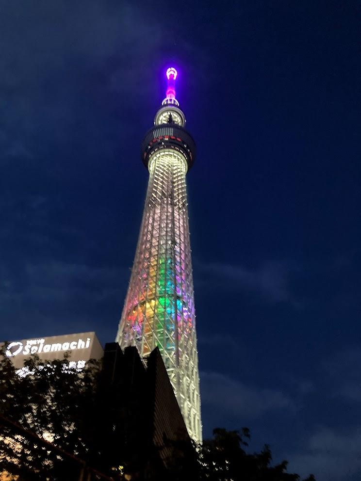
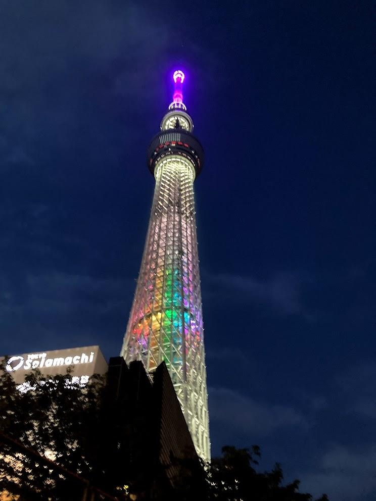

北千住散歩
～東京の下町シリーズ～
--/-- 2021
カテゴリー：通常散歩
今回はディープな街を散歩してきました。東京都足立区にある北千住です。近年住みたい街ランキングで人気が上がる街です。僕も一度は住んでみたい街です。


 

北千住駅は東武スカイツリーライン、東京メトロ日比谷線・千代田線・半蔵門線直通列車、JR常磐線（快速）、つくばエクスプレスと数多くの路線が乗り入れているため、利便性はばつくんです。その為、近くの踏切は中々開かないこともしばしば…

たまにはこういった東京の下町を散歩するのはいいかもしれないですね。ではまた。
← 次の記事 前の記事 →